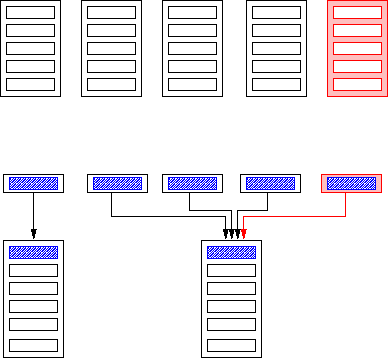
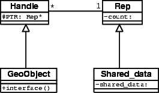
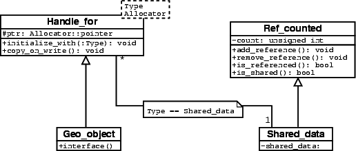

- Generated by
 1.17.0
1.17.0
|
CGAL 6.3 - Manual
|
As of release 2.1, a reference counting scheme is used for the kernel objects in the kernels CGAL::Cartesian and CGAL::Homogeneous. All copies of an object share a common representation object storing the data associated with a kernel object; see Figure 0.1.
The motivation is to save space by avoiding storing the same data more than once and to save time in the copying procedure. Of course, whether we actually save time and space depends on the size of the data that we would have to copy without sharing representations. The drawback is an indirection in accessing the data. Such an indirection is bad in terms of cache efficiency. Thus there are also non-reference-counting kernels available CGAL::Simple_cartesian and CGAL::Simple_homogeneous.

Figure 0.1 Objects using reference counting (bottom) share common representation; copying creates a new handle (drawn at the right) pointing to the same representation as the object copied. Without reference counting (top) all data are copied to the new object (drawn at the right);
The reference counting in the kernel objects is not visible to a user and does not affect the interface of the objects. The representation object is often called the body. The object possibly sharing its representation with others is called a handle, because its data consists of a pointer to its representation object only. If the implementation of the member functions is located with the representation object and the functions in the handle just forward calls to the body, the scheme implements the bridge design pattern, which is used to separate an interface from its implementation. The intent of this design pattern is to allow for exchanging implementations of member functions hidden to the user, especially at runtime.
The two classes Handle and Rep provide reference counting functionality; see Figure 0.2 . By deriving from these classes, the reference counting functionality is inherited. The class Rep provides a counter; representation classes derive from this class. The class Handle takes care of all the reference-counting related stuff. In particular, it provides appropriate implementations of copy constructor, copy assignment, and destructor. These functions take care of the counter in the common representation. Classes sharing reference-counted representation objects (of a class derived from Rep) do not have to worry about the reference counting, with the exception of non-copy-constructors.
There a new representation object must be created and the pointer to the representation object must be set.
If CGAL_USE_LEDA is defined and CGAL_NO_LEDA_HANDLE is not defined, the types Handle and Rep are set to the LEDA types handle_base and handle_rep, respectively (yes, without a leda_-prefix). Use of the LEDA class handle_rep implies that LEDA memory management is used for the representation types.
Scavenging LEDA, we provide the identical functionality in the CGAL classes Leda_like_handle and Leda_like_rep. If LEDA is not available or CGAL_NO_LEDA_HANDLE is set, Handle and Rep correspond to these types.

Figure 0.2 UML class diagram for Handle & Rep scheme.
In order to make use of the reference counting provided by the classes Handle and Rep, your interface class (the class providing the interface of the geometric object) must be derived from Handle and your representation class (the class containing the data to be shared) must be derived from Rep:
The class My_geo_object is responsible for allocating and constructing the My_rep object "on the heap". Typically, a constructor call is forwarded to a corresponding constructor of My_rep. The address of the new My_rep is assigned to PTR inherited from Handle, e.g.:
The default constructor of Handle is called automatically by the compiler and the reference counting is initialized. You always have to define a copy constructor for My_geo_object
and to call the copy constructor of Handle there:
That's it! There is no need to define a copy assignment operator nor is there a need to define a destructor for the derived class My_geo_object! Handle & Rep does the rest for you! You get this functionality by including CGAL/Handle.h
It is common practice to add a (protected) member function ptr() to the class My_geo_object, which casts the PTR pointer from Rep* to the actual type My_rep*.
Note that this scheme is meant for non-modifiable types. You are not allowed to modify data in the representation object, because the data are possibly shared with other My_geo_object objects.
Factoring out the common functionality in base classes enables reuse of the code, but there is also a major drawback. The Handle class does not know the type of the representation object. It maintains a Rep* pointer. Therefore, this pointer must be cast to a pointer to the actual type in the classes derived from Handle. Moreover, since the Handle calls the destructor for the representation through a Rep*, the destructor of Rep must be virtual. Finally, debugging is difficult, again, because the Handle class does not know the type of the representation object. Making the actual type of the representation object a template parameter of the handle solves these problems. This is implemented in class template Handle_for. This class assumes that the reference-counted class provides the following member functions to manage its internal reference counting:
add_reference()
remove_reference()
bool is_referenced()
bool is_shared()
See the UML class diagram in Figure 0.3. The reference counting functionality and the required interface can be inherited from class Ref_counted.

Figure 0.3 UML diagram for templated handles.
Kernel objects have used such a handle/rep scheme since release 2.2.
In order to make use of the reference counting provided by the classes Handle_for and Ref_counted, your representation class, let's say My_rep (the class containing the data to be shared), must provide the interface described above (e.g., by deriving from Ref_counted), and your interface class (the class providing the interface of the geometric object) must be derived from Handle_for<My_rep>. It is assumed that the default constructor of My_rep sets the counter to 1 (the default constructor of Ref_counted does this, of course):
You should also define a copy constructor for My_rep as this may be used for in-place creation in the allocator scheme. The constructors of class My_geo_object are responsible for constructing the My_rep object. Typically, a corresponding constructor call of My_rep is forwarded to Handle_for.
Sometimes, you have to do some calculation first before you can create a representation object in a constructor of My_rep.
Then you can use the initialize_with() member function of Handle_for.
In both cases, Handle_for takes care of allocating space for the new object.
If you define a copy constructor for My_geo_object you have to call the copy constructor of Handle_for there:
That's it! Again, there is no need to define a copy assignment operator nor is there a need to define a destructor for the derived class My_geo_object! Handle_for does the rest for you!
Handle_for provides you with an option to modify the data. There is a copy_on_write()
that should be called right before every modification of the data. It ensures that only your data are overwritten:
You get this functionality by including CGAL/Handle_for.h
Class CGAL::Handle_for has two template parameters. Besides the type of the stored object, there is also a parameter specifying an allocator. Any concrete argument must be a model for the Allocator concept defined in the C++ standard. There is a default value for the second parameter defined as CGAL_ALLOCATOR(T). But you can also choose your own, for example
The default allocator is defined in CGAL/memory.h
See Chapter Memory Management for more information.